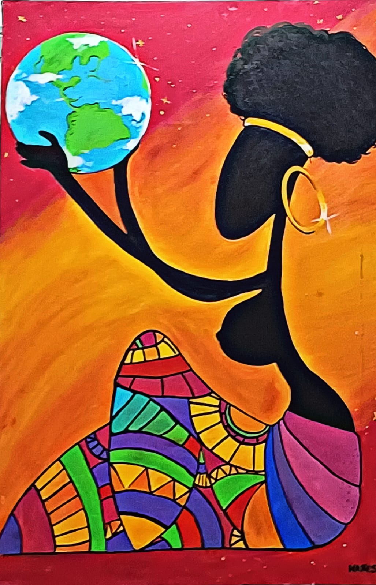

Havia muitos projetos de TI, de carrinhos elétricos de controle remoto a jogos desenvolvidos em Python, entre outros. Os carrinhos eram controlados através do software que tinham desenvolvido, tivemos também um joguinho similar ao Super Sonic onde o jogador deveria subir uma espécie de escada e se desviar de dificuldades que apareciam no caminho até chegar ao final assim vencendo o jogo.
Acredito ter sido desenvolvido em Python e C#, os gráficos e toda a estética do jogo mesmo simples mostrava-se nitidamente muito bem planejados o que é incrível, ver como ali havia um conhecimento bem amplo pra criar qualquer tipo de programa foi algo que me inspirou bastante, pois há muitas possibilidades.
Esse quadro prendeu muito a minha atenção, a pintura de estética futurista passa uma sensação de empoderamento e identidade. A pintura retrata uma mulher negra, vestida com roupas coloridas e vibrantes típicas da cultura africana. Ela segura o planeta Terra em suas mãos, com um gesto delicado e protetor.
Possível interpretação: Questionamento e reflexão em vista das mulheres negras ocupando espaços públicos, empresariais e acadêmicos, de se opor às desigualdades e encorajar outras mulheres negras a mostrar todo o seu potencial. Essa representatividade é fundamental para construir uma sociedade mais justa e igualitária.

Entre as propostas artísticas, destacam-se pinturas, como retratos de artistas contemporâneos, incluindo um desenho a lápis da cantora Billie Eilish que chamou atenção, refletindo sua influência na cultura jovem.